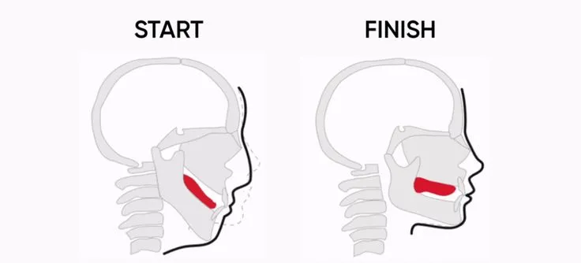

Mewing: The New Jawline Trend – Science or Scam?
In recent years, the mewing jawline trend has exploded across social media, promising a sharper face and improved posture through a simple tongue exercise. But with influencers flaunting dramatic before and after mewing results, many are left wondering: does mewing actually work, or is it just another internet fad? This article dives deep into the science, the method, and the truth behind this viral phenomenon — helping you separate fact from fiction.
What Is the Mewing Jawline Technique?
The mewing jawline technique is a facial restructuring practice that involves proper tongue posture to potentially improve the alignment and definition of the jawline. Developed by Dr. John Mew and Dr. Mike Mew, this method, also known as orthotropics, has gained widespread popularity online. Advocates claim that by placing your tongue against the roof of your mouth consistently, you can gradually alter your facial structure.
While the idea may sound unconventional, it taps into a growing interest in non-invasive, natural aesthetic improvements. With thousands of tutorials, testimonials, and transformation videos flooding TikTok and YouTube, mewing is no longer an obscure technique—it's a global trend.
How to Do Mewing Properly
If you're curious about how to do mewing properly, it starts with understanding tongue placement. The correct posture involves keeping the entire tongue (not just the tip) pressed firmly against the roof of your mouth, just behind the front teeth, without touching them. Your lips should stay closed, and your teeth should gently touch.
Breathing should be done through your nose, as nasal breathing encourages correct tongue posture. Practicing this consistently over weeks or months is what mewing enthusiasts believe will yield visible results. Some even recommend doing exercises that reinforce this posture, especially if you're not used to engaging the tongue this way.
Common Mistakes to Avoid
Many beginners make the mistake of pushing only the tip of their tongue against the palate, which can cause tension without any real benefit. Another error is mewing inconsistently—doing it for just a few minutes a day won’t make a difference. It requires ongoing, conscious effort.
Before and After: Real Results or Wishful Thinking?
One of the driving forces behind the viral success of mewing is the abundance of mewing jawline before and after images online. These photos often show a subtle but noticeable difference in jawline sharpness, chin projection, and overall facial harmony.
However, it's important to approach these transformations with a critical eye. Many variables contribute to facial appearance—including weight loss, lighting, camera angle, and even age. While mewing may influence bone structure in younger individuals (whose bones are still malleable), it's unlikely to create dramatic changes in adults without other contributing factors.
Does Mewing Actually Work?
So, does mewing work? The answer depends on your expectations. Scientifically, there’s limited peer-reviewed research proving that tongue posture alone can significantly alter adult facial structure. However, anecdotal evidence suggests that consistent mewing may lead to subtle improvements in jaw definition, breathing, and even posture.
Some orthodontists and facial development experts support mewing for children and teenagers, especially when integrated with orthodontic treatment. For adults, the consensus is that while changes may occur, they are generally mild and take time.
Benefits of the Mewing Technique
Despite the debate, the mewing technique benefits go beyond aesthetics. One of the most cited advantages is improved breathing, as proper tongue posture can open up the nasal passages and reduce mouth breathing. This can enhance sleep quality and reduce issues like snoring.
Posture improvement is another benefit. Mewing requires a straight spine and an upright head position, which naturally leads to better body alignment over time. Additionally, many users report increased self-confidence as they feel more in control of their appearance and health.
The Science Behind Orthotropics and Mewing
Orthotropics is the science behind mewing, emphasizing the influence of oral posture on facial development. According to Dr. John Mew, the position of the tongue, lips, and jaw plays a crucial role in how the face grows. When the tongue rests against the roof of the mouth, it helps shape the palate and support forward growth of the mid-face.
In children, this can result in more attractive facial proportions and fewer dental problems. For adults, the potential changes are subtler and primarily involve soft tissue. While mainstream orthodontics often dismiss orthotropics, the concept continues to gain traction as more people seek natural solutions for facial enhancement.
Is Mewing Just a Trend?
While it’s easy to label mewing as just another TikTok fad, its roots in dental science and facial orthopedics suggest there’s more to the story. The fact that the technique has endured and evolved over decades indicates that there may be merit behind the movement.
Mewing represents a shift toward holistic aesthetics—where people seek to optimize their appearance through daily habits rather than surgery or fillers. Even if the transformations aren’t dramatic, the practice itself promotes healthier posture, breathing, and awareness of facial mechanics.
How to Incorporate Mewing into Daily Life
Making mewing a part of your routine doesn't require any equipment or special tools. Start by setting reminders throughout the day to check your tongue position. You can also associate it with regular activities—like sitting at your desk, brushing your teeth, or waiting at a traffic light.
The goal is consistency. Like any habit, it takes time to rewire your muscle memory. But with practice, mewing can become second nature, allowing you to enjoy its potential benefits without conscious effort.
Final Thoughts: Science or Scam?
Mewing walks the line between science and speculation. On one hand, it’s grounded in the concept of facial development and supported by some orthodontic theories. On the other hand, exaggerated claims and poorly understood mechanics can lead people to expect unrealistic results.
Ultimately, the mewing jawline technique may not be a miracle solution, but it offers a low-risk, potentially beneficial practice for those seeking subtle improvements. Whether you’re chasing a chiseled look or just trying to improve your breathing and posture, mewing might be worth the effort.
Conclusion
The mewing jawline trend has captivated millions with the promise of a sharper, more defined face—achieved through nothing more than conscious tongue posture. While scientific backing remains limited, especially for adults, the technique aligns with basic principles of facial development and proper posture.
Whether you're drawn to orthotropics for health reasons or curious about enhancing your appearance naturally, mewing is a low-risk practice that requires only consistency and patience. It may not deliver dramatic changes overnight, but its potential benefits—from better breathing to improved jawline definition—make it worth exploring.
Ultimately, mewing isn’t a miracle cure or a scam—it’s a practice rooted in awareness, discipline, and a long-term mindset. If you're willing to commit, the results—however subtle—could positively impact both your facial aesthetics and overall wellbeing.
Common Mistakes to Avoid
-
Only pressing the tip of the tongue against the palate – This is one of the
most common errors beginners make. It provides little to no structural benefit and can create
unnecessary tension in the jaw.
How to fix it: Ensure the entire tongue, including the back, is firmly placed on the roof of the mouth. -
Inconsistent practice – Mewing for just a few minutes a day won’t yield
noticeable results. Like any habit, it requires consistency.
How to fix it: Set daily reminders or associate mewing with routine tasks like commuting or brushing your teeth. -
Mouth breathing – Breathing through the mouth counters the effects of mewing
and can worsen facial posture over time.
How to fix it: Train yourself to breathe exclusively through your nose by addressing any underlying issues like allergies or congestion. -
Poor head and neck posture – Slouching or tilting the head can prevent the
correct tongue position and reduce effectiveness.
How to fix it: Maintain an upright posture with your head level and chin slightly tucked while mewing. -
Expecting quick or extreme results – Unrealistic expectations can lead to
disappointment and abandoning the practice altogether.
How to fix it: Understand that changes take time and are typically subtle, especially for adults.
Recommended Products
1. Jawzrsize Pop 'N Go Jaw, Face & Neck Exerciser
This popular tool targets your jaw, face, and neck muscles with resistance training. It helps strengthen the masseter muscle and improve jawline definition—perfect for those practicing mewing and wanting to accelerate their facial transformation.
2. JAWCKO Ultra‑Tough Jawline Chewing Gum
Made from extra-tough silicone, this chewing gum simulates high-resistance jaw training. It's a discreet and effective way to build jaw strength and complement your mewing technique throughout the day—at home, work, or on the go.
3. Elegancy Jaw Exerciser | Face & Jawline Trainer
This sleek and portable exerciser is designed to tone facial muscles and support a more defined jawline. It works great in tandem with mewing by increasing muscle engagement and helping you maintain proper tongue posture through enhanced jaw stability.
Frequently Asked Questions
While results vary, many adults report subtle improvements in jawline definition and breathing from consistent mewing. However, major bone changes are unlikely since adult bones are fully developed.
Most users notice changes after several months of daily practice. For some, it may take a year or more. Consistency and proper technique are essential for visible improvements.
Technically, mewing is a conscious act, but consistent daytime practice helps your tongue naturally adopt the right posture during sleep over time.
Mewing is safe when done correctly. Over-applying pressure or incorrect posture may cause discomfort or jaw tension. Stop if you feel pain and consult a specialist if needed.
Mewing may slightly enhance the appearance of a weak chin, but it won't correct structural issues like overbites. Orthodontic treatment is recommended for significant dental corrections.
Proper mewing involves placing the entire tongue (not just the tip) flat against the roof of the mouth, keeping lips closed, teeth lightly touching, and breathing through the nose.
Absolutely. Jawline exercisers or chewing gum can strengthen the masseter muscles and complement mewing. Just be cautious not to overtrain or cause jaw strain.